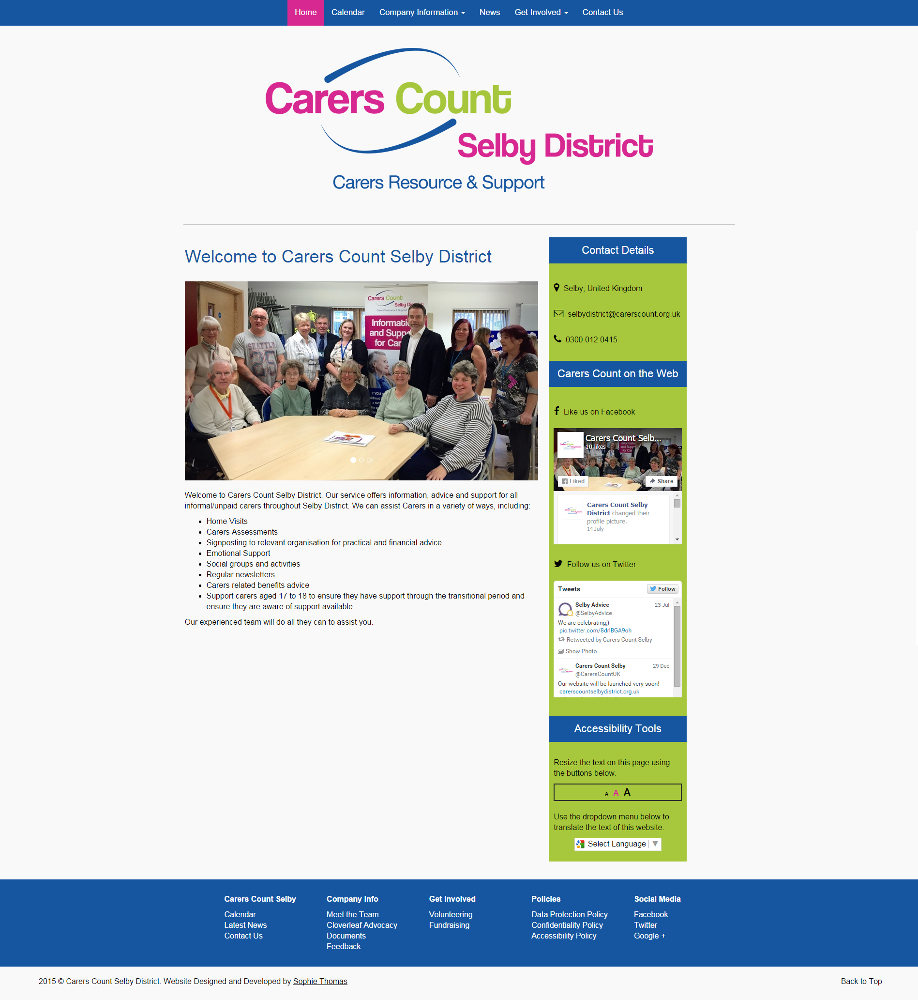
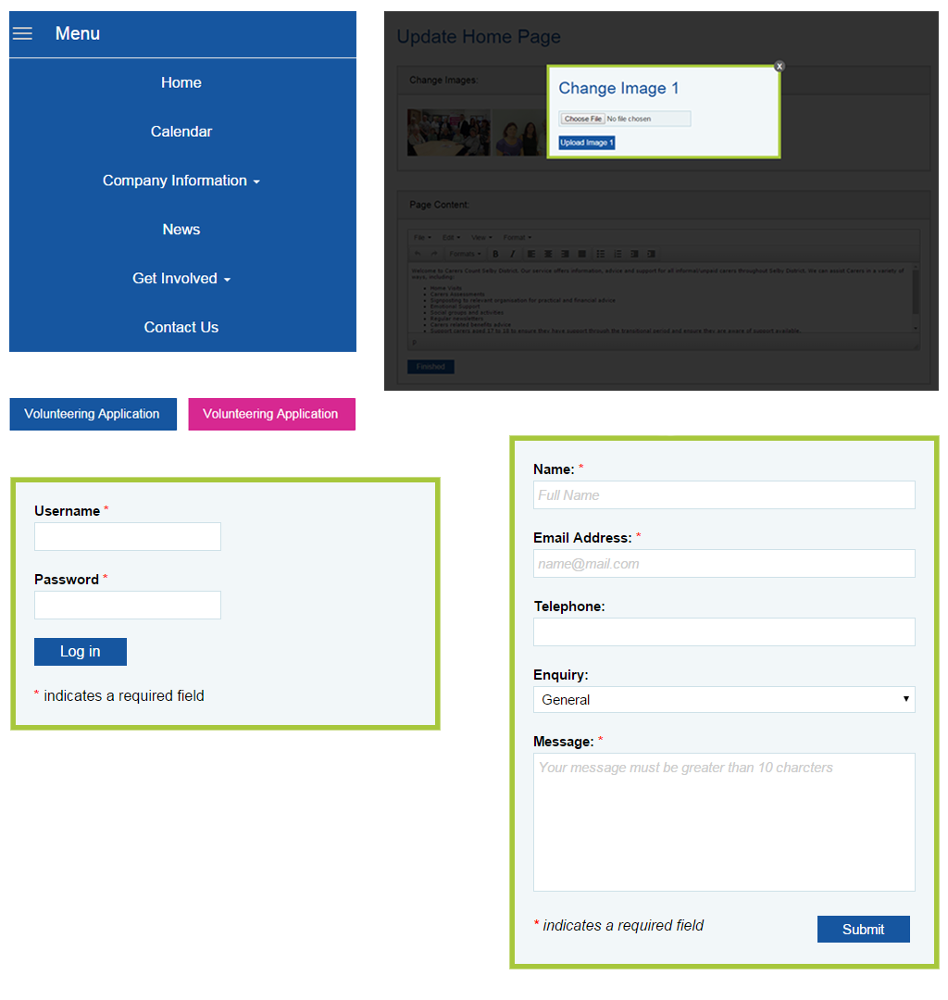
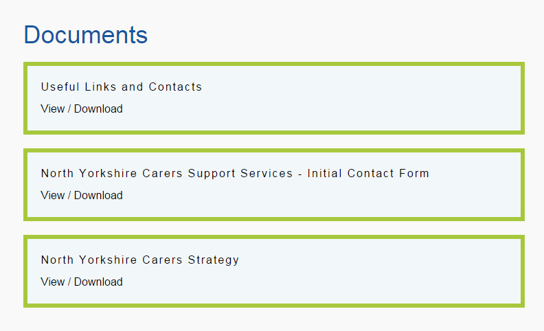
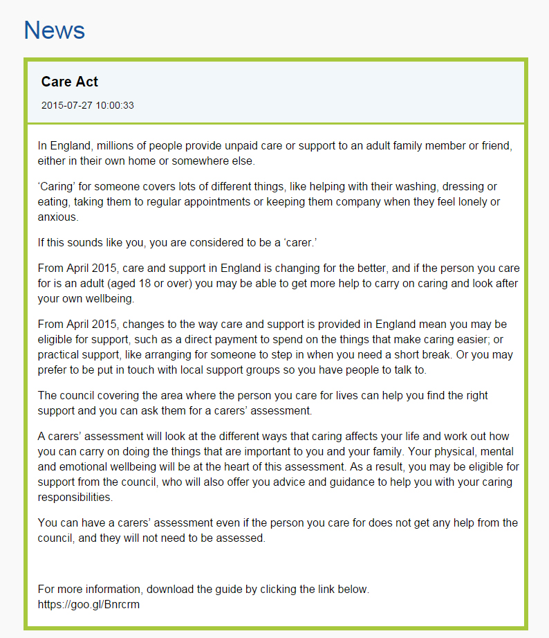
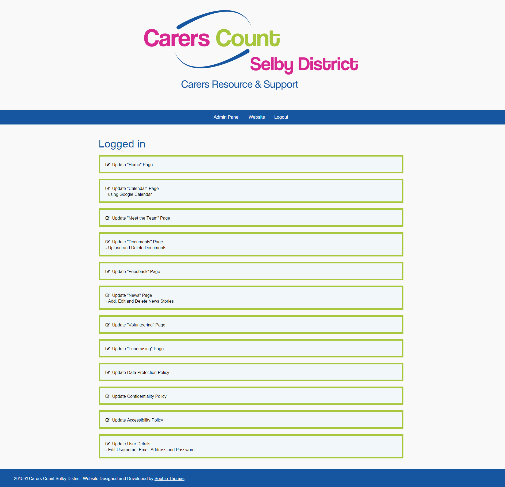
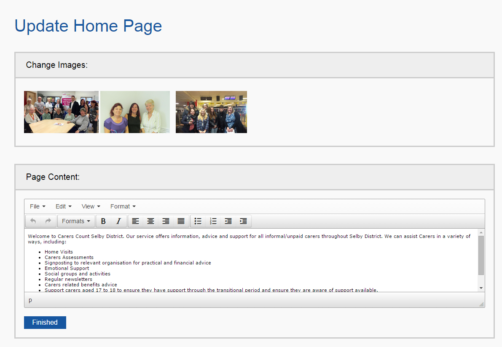
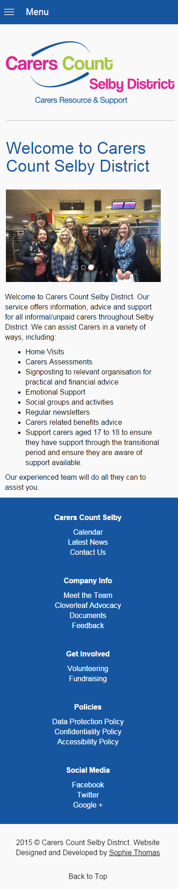

Carers Count Selby District
Project Completion Date: 18th August, 2015
Carers Count Selby District are a charity that offers information, advice and support for all informal or unpaid carers within the Selby District.
They wanted an online presence to allow carers to find out more about Carers Count and to keep up to date with what the charity is doing.
After meeting with the client we decided that Social Media accounts and a website were required to allow them to inform people about the work they are doing as well as giving advice to the carers.
The Brief
Design and develop a website that is responsive and allows the Carers Count team to edit the content, upload documents and add news to the website. In addition to this, Social Media accounts are to be created and set up along with user guides being created to show how to use the Content Management System and Social Media accounts.
The Website
The website design was initially hard because they already had a logo and set colour scheme. However after some time researching and mocking up different designs I came up with a simple design which allowed room for more content to be added by them. Once the client and I were happy with the design I began to develop the website using the Bootstrap Framework. I used Bootstrap to speed up the time of developing the website as they wanted the website live quite quickly.
A bespoke Content Management System was created by Tom Gabriel to allow the content on the website to be edited, documents to be uploaded and news to be added. This was created using PHP.







Overall I feel that this project went really well and it was a great experience working with an actual client. The design of the website is simple and clean to make it easy for both visitors and the Carers Count team to use the website.
I believe that the website did meet the intended purpose as it is user friendly, responsive and allows the Carers Count team to edit various different part of the website.
"I can’t say enough about the excellent work that Sophie has done with our website, Facebook and Twitter accounts.
Sophie took our thoughts and suggestions about what we needed and surpassed our expectations. At each stage she listened to what we were aiming for then took it away to provide us with a clear, concise and user friendly website.
Sophie understood the lack of knowledge that we had for social media and website design. She was patient and considerate in her explanations, designing us comprehensive instruction booklets that we are able to access and use when needed.
We would use Sophie’s skills again and recommend her to those who need help with their website and social media sites."
- Dawn Theaker
Service Manager (Carers Count Selby District)